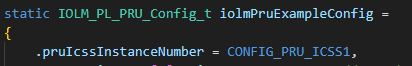

IO-Link Masterv2.01.01 |
 |

|
IO-Link Masterv2.01.01 |
|
|
Limitation with Pinmuxing:
Pinmuxing cannot be made flexible in the example project as the Rx pins of the ports are hard-coded in the default PRU firmware.
Such a limitation shall only apply to 8 RX pins and not to TX and DIR GPIO. To overcome this limitation, a customized PRU firmware should be used by the user.
IO-Link Master can use either of ICSS instances, however the current example is configured to work with TI's Board, hence it uses ICSS0. If a hardware is developed to use ICSS1 instead of ICSS0, the changes that must be done in Software are all in the application layer, that means no changes in the Stack or PRU are needed. The Stack/PRU are agnostic to ICSS instance.
Here are the steps to be done to change the ICSS0 instance to ICSS1:
In main.c change the instance to ICSS1:

Note: Although the Porting to ICSS1 should work, it is not yet tested.
 1.9.8
1.9.8